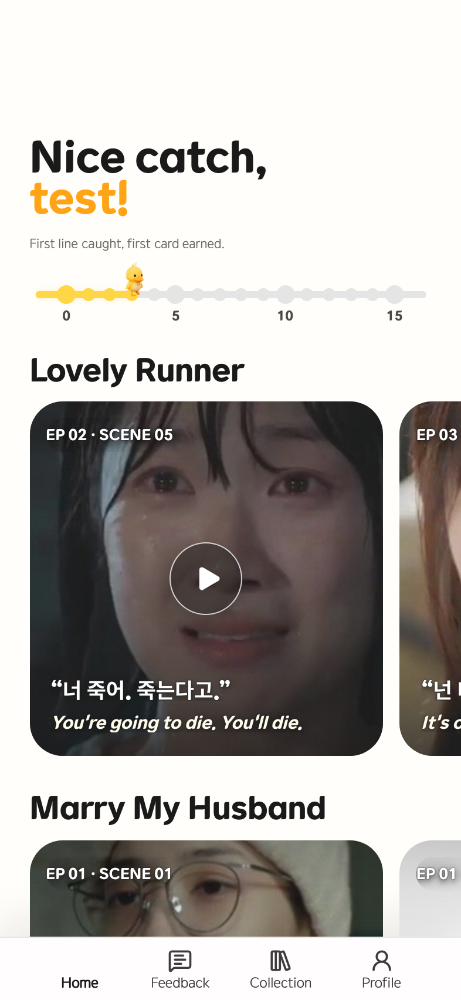
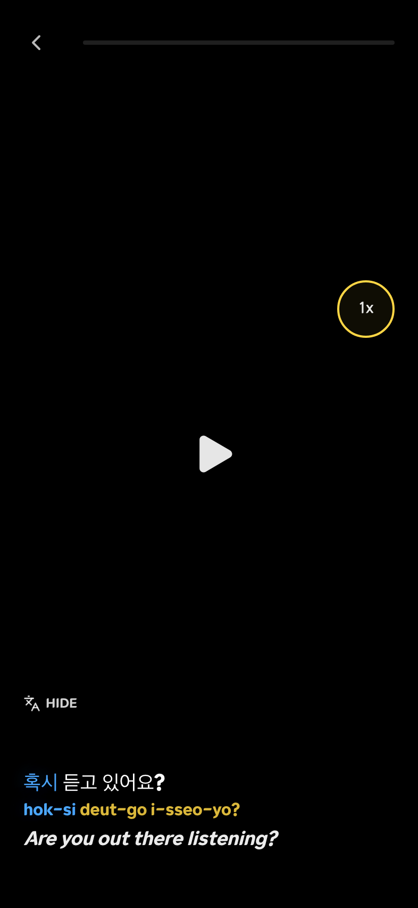
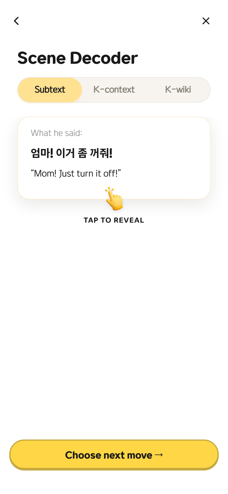
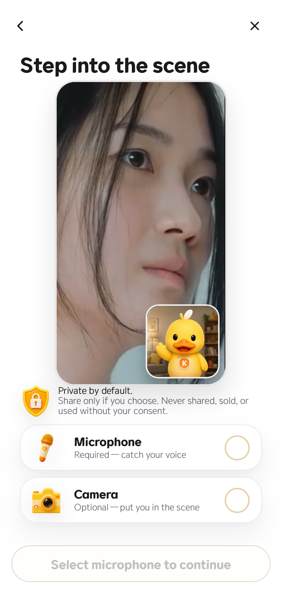
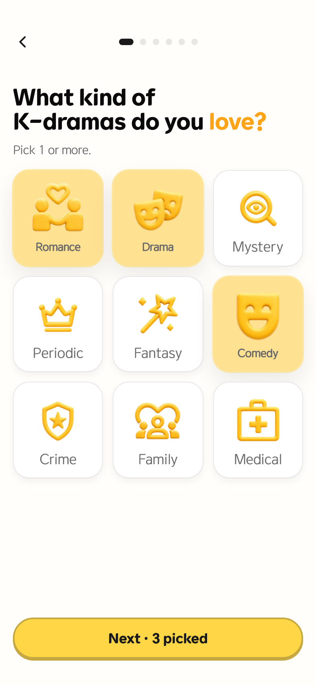
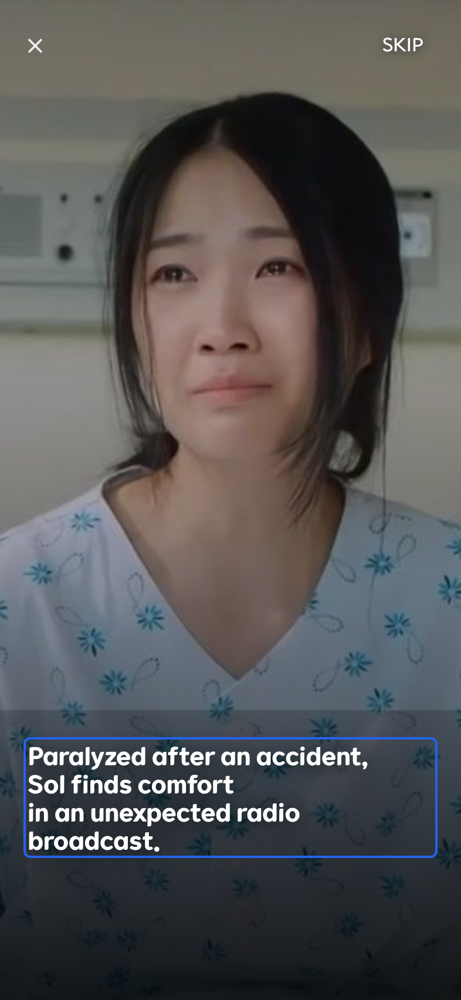
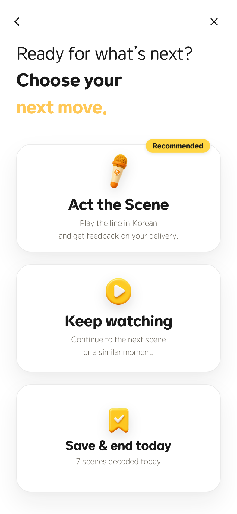
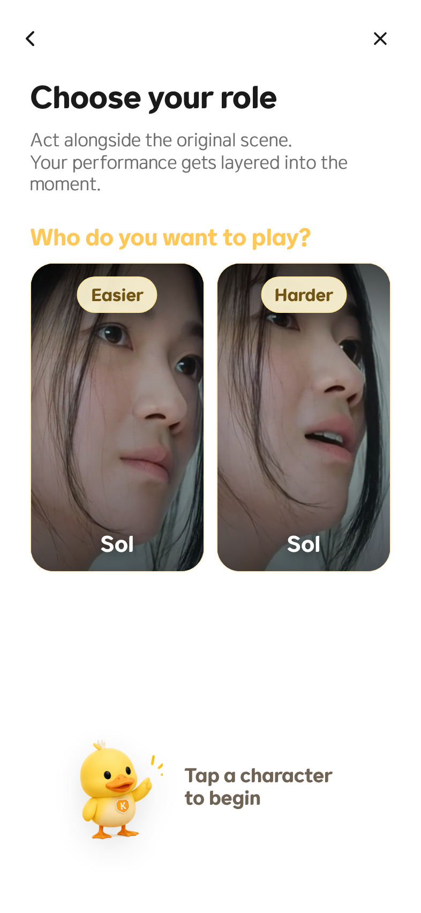
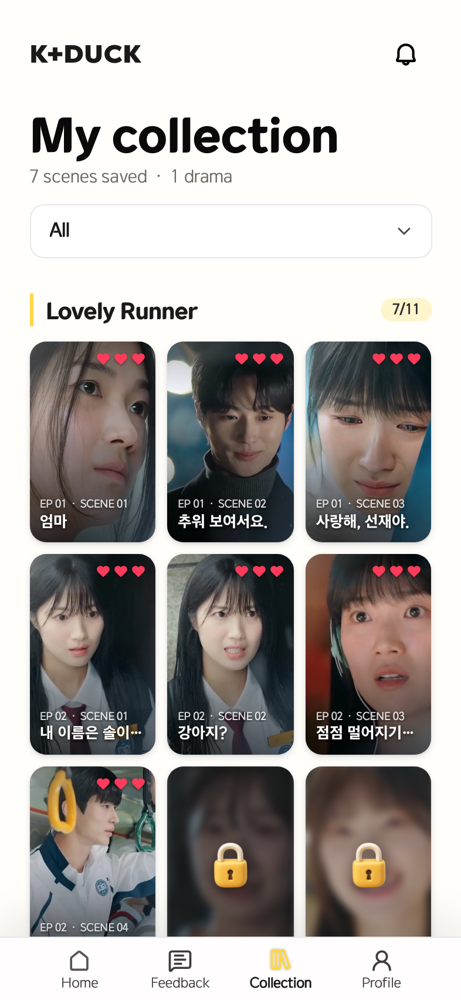
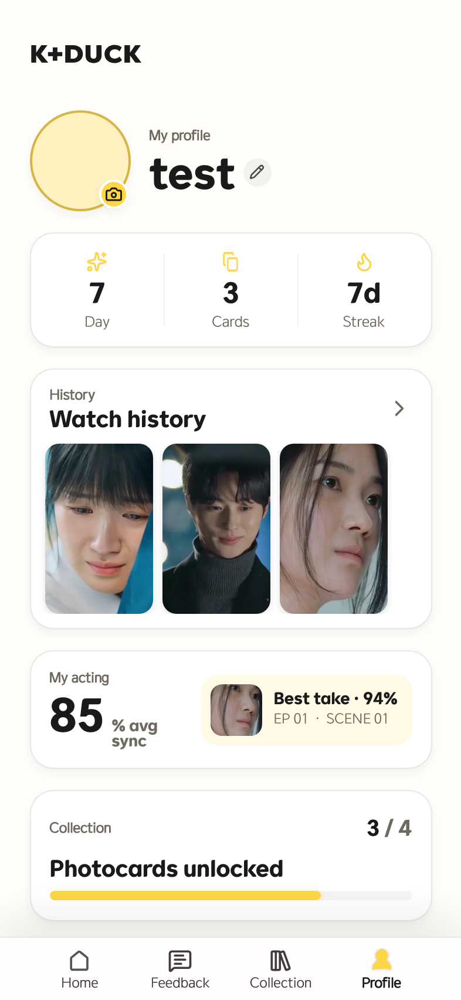

실제 로컬 앱 route에서 캡처한 화면으로 구성했습니다.
K-drama 장면을 영상 학습, 장면 해석, 역할 연기 녹음, 컬렉션으로 연결한 외국인 대상 한국어 학습 PWA입니다.
이 포트폴리오는 단순 화면 목록이 아니라, 실제 프로젝트에서 제가 다룬 데이터 흐름, 브라우저 media API, PWA 캐시, local/dev/WebView 환경 차이, QA 기준을 case study 형식으로 정리한 제출용 문서입니다.

K+DUCK MVP2는 외국인 K-drama 팬이 실제 드라마 장면을 짧은 학습 단위로 소비하고, 그 장면의 대사와 문화적 맥락을 이해한 뒤 직접 따라 말해보는 PWA입니다. 학습은 온보딩 - 홈 추천 - 장면 소개 - 영상 시청 - Scene Decoder - Acting - Collection으로 이어집니다.
제가 집중한 부분은 화면을 예쁘게 배치하는 것보다 한 단계 더 들어가 있습니다. scene manifest, subtitle timing, romanization, acting line, collection metadata가 서로 다른 화면에서 끊기지 않도록 연결했고, 브라우저 권한과 녹음 데이터가 페이지 전환 후에도 깨지지 않게 확인했습니다.
실제 로컬 앱 route에서 캡처한 화면으로 구성했습니다.
온보딩부터 컬렉션까지 하나의 학습 여정으로 구현했습니다.
local preview, dev 배포, Android WebView shell 차이를 분리했습니다.
기술 목록보다 문제 해결 과정이 보이게 정리했습니다.
React/TypeScript로 온보딩, 홈, scene intro, watch, decoder, acting, collection 화면을 연결했습니다. scene id와 route, 진행 상태 guard가 어긋나면 사용자가 빈 화면을 보게 되기 때문에 manifest 기준으로 route를 검증했습니다.
video playback, subtitle timing, romanization, 영어 번역, Scene Decoder 탭을 조합했습니다. 사용자가 장면을 보는 것에서 끝나지 않고 왜 이 대사가 이런 의미인지까지 이어지도록 화면 흐름을 설계했습니다.
브라우저 getUserMedia와 MediaRecorder를 사용하는 역할 연기 흐름을 다뤘습니다. 권한 허용 후 전환 지연, 카메라 프리뷰 지연, 녹음 불가, 다시듣기 미재생 문제를 단계별로 나누어 추적했습니다.
Service Worker, stale asset recovery, bundle hash, cache header, R2 media path를 배포 기준으로 확인했습니다. local assets fallback과 dev/main 정상 미디어 경로를 섞어 판단하지 않도록 기준을 분리했습니다.
Android shell에서 web PWA와 다르게 동작할 수 있는 인증, 영상 재생, 권한, back navigation 경계를 구분했습니다. 같은 증상이라도 브라우저, 배포, native host 중 어디서 깨지는지 먼저 나눴습니다.
좋아하는 장르와 학습 수준을 선택합니다. 이 정보는 홈 추천과 학습 난이도 인식에 연결됩니다.
추천 scene, 진행도, 컬렉션 탭을 한 화면에 배치해 학습을 앱처럼 반복하게 만듭니다.
영상과 자막, romanization, 번역을 결합해 실제 장면을 따라가게 합니다.
대사의 속뜻과 K-context를 탭 구조로 설명해 문장 번역보다 깊은 이해를 제공합니다.
역할과 난이도를 선택하고, 카메라/마이크 권한을 받아 직접 말해보는 연습으로 이어집니다.
완료한 scene은 컬렉션 카드와 프로필 기록으로 남아 다음 학습을 유도합니다.

Watch 화면: video playback, caption timing, romanization, translation이 한 번에 맞물립니다.

Decoder 화면: 같은 대사를 단순 번역이 아니라 속뜻과 문화 맥락으로 다시 설명합니다.
scene id는 하드코딩하면 금방 깨집니다. 실제로 오래된 id로 접근하면 Not Found가 나오기 때문에, 현재 manifest의 defaultSceneId, routeId, slug를 기준으로 화면과 캡처를 맞췄습니다.
사용자가 watch, decoder, acting route로 바로 들어왔을 때 앞 단계를 건너뛰면 학습 문맥이 깨집니다. sessionStorage의 scene-flow step과 local progress를 이용해 허용된 단계만 진입하게 했습니다.
caption timing, speaker, romanized words, acting line, character metadata가 모두 다른 UI에서 필요합니다. 각 화면은 같은 scene 데이터를 자기 목적에 맞게 재구성합니다.
/api/content/manifest, /api/content/scenes/:id에서 scene 목록, 자막, 영상, acting line metadata를 읽습니다.getUserMedia, MediaRecorder, Blob URL, playback page 전달 구조를 통해 역할 연기 녹음 흐름을 구성합니다.이 프로젝트에서 가장 포트폴리오 소재가 좋은 부분은 media recording입니다. 단순히 카메라 기능 구현이 아니라, 브라우저 권한, stream 생성, route transition, 녹음 데이터 저장, 다시듣기 playback이 모두 엮인 문제였기 때문입니다.
local preview에서 카메라/마이크 허용 후 다음 페이지로 넘어가는 데 몇 초가 걸리고, 녹음 페이지에서 카메라 프리뷰가 늦게 뜨거나 녹음과 다시듣기가 불안정했습니다. 반면 dev 배포 환경에서는 같은 기능이 정상 동작했습니다.
권한 요청 시점, getUserMedia stream 초기화, React route transition, MediaRecorder lifecycle, Blob URL/sessionStorage 기반 playback 전달, local proxy와 dev CDN 경로 차이로 나누어 확인했습니다.
녹음이 안 된다는 증상을 하나의 버그로 보지 않고, 권한 페이지, 녹음 페이지, 다시듣기 페이지를 각각 독립된 관찰 지점으로 나눴습니다. local, dev, Android WebView shell도 같은 환경으로 취급하지 않았습니다.
병목 구간과 환경별 차이를 분리했고, 이후 카메라 프리뷰 지연, 녹음 불가, 다시듣기 미재생을 따로 검증할 수 있는 QA 기준을 만들 수 있었습니다.

권한 화면은 단순 OS permission으로 던지지 않고, 왜 마이크/카메라가 필요한지 학습 맥락 안에서 설명합니다.
모바일 앱처럼 보이는 웹에서는 320px 작은 화면, Android browser, iOS safe-area, 하단 CTA/탭바 겹침이 모두 QA 대상입니다. 화면을 단순 반응형이 아니라 app-stage처럼 다뤘습니다.
배포 후 사용자가 오래된 JS/CSS나 asset을 잡고 있으면 새 기능이 깨집니다. Service Worker install cap, stale asset recovery, update prompt, version/bundle hash를 확인 대상으로 삼았습니다.
사용자-facing 이미지/영상은 R2/CDN 경로가 정상 기준입니다. local assets fallback은 preview나 recovery용으로만 보고, dev/main 배포 검증에서는 CDN 변환과 cache header를 따로 확인했습니다.
아래 이미지는 현재 로컬 dev 서버의 실제 route에서 캡처했습니다. 오래된 scene id로 빈 화면을 캡처하지 않도록 manifest의 기본 scene을 읽어 생성했습니다.






K+DUCK MVP2는 외국인 K-drama 팬이 실제 드라마 장면으로 한국어를 학습할 수 있도록 만든 모바일 중심 PWA입니다. 저는 이 프로젝트에서 단순 UI 구현보다 콘텐츠 데이터와 사용자 플로우가 끊기지 않게 연결하는 작업을 주로 담당했습니다. 사용자는 온보딩에서 관심 장르와 학습 수준을 선택하고, 홈에서 추천 장면을 확인한 뒤, 장면 소개, 영상 시청, 장면 해석, 역할 연기, 녹음, 컬렉션 저장까지 이어지는 과정을 경험합니다.
구현 과정에서는 scene manifest, subtitle timing, romanization, character metadata, acting line 데이터를 각 화면에 맞게 조합했습니다. 영상 학습 화면에서는 비디오와 자막, 발음 표기, 영어 번역, replay control이 함께 동작해야 했고, Decoder 화면에서는 같은 대사를 문장 번역이 아니라 속뜻과 문화적 맥락으로 다시 설명해야 했습니다. 또한 사용자가 아직 도달하지 않은 단계로 직접 접근했을 때 flow가 깨지지 않도록 scene 진행 상태를 기반으로 route guard를 구성했습니다.
가장 깊게 다룬 문제는 카메라와 마이크를 활용한 역할 연기 녹음 기능이었습니다. 브라우저의 getUserMedia와 MediaRecorder를 사용해 권한 요청, 프리뷰, 녹음 시작/종료, 다시듣기, 완료 화면으로 이어지는 구조를 만들었습니다. local preview에서는 권한 허용 이후 전환이 느리거나 녹음과 playback이 불안정한 반면 dev 환경에서는 정상 동작하는 문제가 있었고, 이를 권한 요청, stream 초기화, route 전환, Blob URL/sessionStorage 전달 경로로 나누어 추적했습니다.
이 프로젝트를 통해 React/TypeScript 화면 개발뿐 아니라 브라우저 media API, PWA 캐시, Cloudflare 기반 배포, R2 미디어 경로, 모바일 viewport, Android WebView 경계까지 함께 다루는 경험을 쌓았습니다. 결과적으로 실제 드라마 장면을 중심으로 영상 학습, 장면 해석, 따라 말하기, 컬렉션 저장까지 이어지는 복합 학습 경험을 구현했습니다.